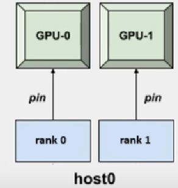
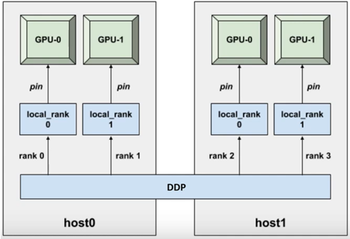

4. Scaling Python Workloads
4.1. Overview
4.2. Learning Objectives
- Write and execute SLURM scripts to run Python scripts on Cyclone in different configurations (CPU, single GPU, multi-GPU, multi-node).
- Understand the resource allocation process using SLURM for Python workloads.
- Optimize Python workflows for HPC by leveraging distributed computing frameworks like PyTorch DDP.
- Troubleshoot common issues when running Python jobs on Cyclone.
4.3. Prerequisites
-
T01 - Introduction to HPC Systems: This tutorial will give you some basic knowledge on HPC systems and basic terminologies.
-
T02 - Accessing and Navigating Cyclone:This tutorial will give you some basic knowledge on how to connect, copy files and navigate the HPC system.
4.4. Why Use Cyclone for Python Workloads?
- Scalability: Using Cyclone, workloads can be scaled across multiple CPUs and GPUs, which enables faster processing of large datasets and complex computations.
- Performance Gains: Utilizing advanced hardware/software such as GPUs, high-speed interconnects and SLURM, Python workflows can be executed more efficiently.
4.5. Tools and Frameworks
- SLURM - Used for job scheduling, job monitoring and environment setup
- PyTorch - Open-source deep learning framework that’s known for its flexibility and ease-of-use.
- CUDA - Enables GPU acceleration for computational tasks through APIs to simplify GPU-based parallel processing for HPC, data science and AI.
- NCCL - Implements multi-GPU and multi-node communication that is optimized for NVIDIA GPUs and networking.
4.6. Training AI models on Cyclone
4.6.1. Running Python Scripts on CPU
import os
import argparse
import torch
import torch.nn as nn
import torch.optim as optim
from torchvision import datasets, transforms
from torch.utils.data import DataLoader
from model import CNN_classifier
import time
def train(model, dataloader: DataLoader, args):
print("Entering training loop...")
criterion = nn.NLLLoss()
optimizer = optim.Adam(params=model.parameters(), lr = args.lr)
model.train()
for epoch in range(1, args.epochs + 1):
epoch_loss: float = 0.0
for batch_idx, (data,target) in enumerate(dataloader):
optimizer.zero_grad()
output = model(data)
loss = criterion(output, target)
loss.backward()
optimizer.step()
epoch_loss += loss.item()
if batch_idx % 100 == 0:
print(f'Train Epoch: {epoch} [{batch_idx * len(data)}/{len(dataloader.dataset)} '
f'({100. * batch_idx / len(dataloader):.0f}%)]\tLoss: {loss.item():.6f}')
print("Exiting training loop...")
def main():
parser = argparse.ArgumentParser(prog="Pytorch on HPC")
parser.add_argument("--batch_size", type=int, default=16)
parser.add_argument("--epochs", type=int, default=5)
parser.add_argument("--lr", type=float, default=0.001)
args = parser.parse_args()
transform = transforms.Compose([
transforms.ToTensor(),
transforms.Normalize((0.1307,), (0.3081,))
])
train_dataset = datasets.MNIST('./data', train=True, download=True, transform=transform)
train_loader = DataLoader(
train_dataset,
batch_size = args.batch_size,
shuffle=False,
)
model = CNN_classifier()
time_start = time.time()
train(model=model, dataloader= train_loader, args=args)
time_stop = time.time()
print(f"Training time = {time_stop-time_start}" )
if __name__ == "__main__" :
main()
src/t04 and execute the run_cpu.SLURM file usingsbatch run_cpu.SLURM
#!/bin/bash
#SBATCH --job-name=pytorch_cpu # Job name
#SBATCH --nodes=1 # Number of nodes
#SBATCH --cpus-per-task=10 # CPUs per task
#SBATCH --time=02:00:00 # Maximum runtime (HH:MM:SS)
#SBATCH --partition=cpu # Partition name
#SBATCH --output=src/t04/logs/cpu_%j.out # Standard output log
#SBATCH --error=src/t04/logs/cpu_%j.err # Standard error log
module load PyTorch/1.12.0-foss-2022a-CUDA-11.7.0
module load torchvision/0.13.1-foss-2022a-CUDA-11.7.0
# Run Python script
srun python src/t04/cpu_example.py \
--batch_size 16 \
--epochs 5 \
--lr 0.001
The run_cpu.SLURM script is designed to execute the cpu_example.py on Cyclone using SLURM. In the script, the number of nodes, CPU cores, runtime and partition are specified, which instruct SLURM to allocate 10 CPU cores from a single node for 2:00:00 hours for this job.
Next, the environment is setup using Cyclones available modules for Pytorch and Torchvision ensuring all necessary libraries and dependencies are available.
Finally, the Python script is launched using srun, which executes the specified script with the allocated resources and given runtime arguments.
After executing the above script, two seperate output logs will be generated in the logs/ directory.
cpu_<jobid>.out
cpu_<jobid>.err
Navigate to the logs/ directory with the terminal interface using cd logs/ or by using VScode's file explorer.
Next, view the contents of the cpu_<jobid>.out. To use the terminal, first execute module load nano to load a Linux text editor and enter the command nano cpu_<jobid>.out. If navigating using VScode, simply double click the output file.
Entering training loop...
Train Epoch: 1 [0/60000 (0%)] Loss: 2.300653
Train Epoch: 1 [1600/60000 (3%)] Loss: 0.546140
.
.
Train Epoch: 5 [57600/60000 (96%)] Loss: 0.000070
Train Epoch: 5 [59200/60000 (99%)] Loss: 0.000981
Exiting training loop...
Training time = 192.2544162273407
Training this simple CNN classifier for 5 epochs on the relatively small MNIST dataset took a total of 192 seconds. This process can be made significantly more efficient by utilizing Cyclones GPU cores, rather than the CPU cores.
4.6.2. Running Python Scripts on Single GPU
To train the AI model using GPUs on Cyclone, some basic modifications must be made on both the Python and SLURM scripts. Beginning with the gpu_example.py Python script, in the main function, the following code block is added.
if torch.cuda.is_available():
print("Utilizing GPU")
device = torch.device("cuda")
else:
print("Utilizing CPU")
device = torch.device('cpu')
The above code initializes the device variable as the GPU, by first checking if there is one available. If not, the device defaults to CPU.
The next changes to the script must be made before the model begins training using the code below
model.to(device)
and during training using the following
data = data.to(device)
target = target.to(device)
It is important to have both the data and the model on the same device (CPU or GPU), otherwise a runtime error will occur. PyTorch operations require the tensors involved to be on the same device.
The run_gpu.SLURM script is designed to execute the gpu_example.py on a single GPU. This configuration is specified by instructing SLURM to allocate a GPU on a single node using the following SLURM directives. When launching gpu jobs on Cyclone, it is important to specify the correct --partition as SLURM defaults to CPU, which will cause an error.
#SBATCH --nodes=1 # Number of nodes
#SBATCH --ntasks-per-node=1 # Tasks per node (GPUs per node)
#SBATCH --gpus-per-node=1 # GPUs per node
#SBATCH --partition=gpu # Partition name
Next, some additional GPU-related modules must be loaded from Cyclone's library. The cuDNN and CUDA modules provide the tools and drivers required to enable GPU optimized deep learning operations.
module load PyTorch/1.12.0-foss-2022a-CUDA-11.7.0
module load cuDNN/8.4.1.50-CUDA-11.7.0
module load torchvision/0.13.1-foss-2022a-CUDA-11.7.0
module load CUDA/11.7.0
When loading modules from Cyclone's library, it is important to load compatible versions of these modules to ensure smooth interaction between the hardware, CUDA, and the deep learning framework (e.g., PyTorch), avoiding errors or performance issues.
To run this SLURM script, navigate to the script directory and submit the job using sbatch run_gpu.SLURM. After the job finishes, navigate to the logs/ directory and open the gpu_<job_id>.out file and observe the difference.
Utilizing GPU
Entering training loop...
Train Epoch: 1 [0/60000 (0%)] Loss: 2.332518
Train Epoch: 1 [1600/60000 (3%)] Loss: 0.376552
Train Epoch: 1 [3200/60000 (5%)] Loss: 0.127207
.
.
.
Train Epoch: 5 [59200/60000 (99%)] Loss: 0.082046
Exiting training loop...
Training time = 73.48071932792664
Already there is a substantial decrease in training time by utilizing a GPU over a CPU. However, Cyclone offers much more GPU resources per node, meaning that there are further gains to training efficiency left on the table by utilizing only a single GPU.
4.6.3. Running Python Scripts on Multi-GPU (Single Node) using DDP
To leverage multiple GPUs per node on Cyclone, workloads must be scaled using parallelization techniques. While there are many times of parallelism, Data parallelism will be used to scale model training in this tutorial.

When optimizing AI training using data parallelism, a copy model is loaded on all GPUs available, and the dataset is split amongst them. Each GPU processes a different subset of the data in parallel. During the forward pass, each GPU processes a different batch of the data and the gradients are communicated between the devices so as to ensure the model parameters are appropriately updated during backpropagation. To implement this efficiently, PyTorch provides the Distributed Data Parallel (DDP) module, which automates the process of distributing data, synchronizing gradients, and ensuring consistent parameter updates across GPUs. DDP leverages NCCL (NVIDIA Collective Communications Library) as its backend to optimize GPU communication, enabling seamless gradient sharing and synchronization with minimal overhead.

To train our AI model using DDP, some changes must be made to the Python and SLURM scripts. Firstly, the concepts of Ranks, Processes and the World are introduced to the workflow. A rank is the unique id given to a process, and is used for communication purposes. One GPU corresponds to one process. The World is a group that contains all the processes, thus the size of the World is equal to the number of GPUs.
Firstly, in the run_multigpu.SLURM script, changes are being made to the directives to instruct SLURM to allocate more GPUs per node. For this section of the tutorial, 2 GPUs on a single node are utilized.
#SBATCH --nodes=1 # Number of nodes
#SBATCH --ntasks-per-node=2 # Tasks per node (GPUs per node)
#SBATCH --gpus-per-node=2 # GPUs per node
Further changes to the SLURM script include lines to retrieve environment variables set by the SLURM scheduler to define the nodes' address and a random port which are used to establish communication between processes during training. This communication will be done using the NCCL backend, which must be also loaded. World size can be directly calculated in the SLURM script using the environment variables, which as stated before are the total number of GPUs available. Finally to the srun command, add --export=ALL to ensure the environment variables are passed to the srun job
module load CUDA/11.7.0
module load NCCL/2.12.12-GCCcore-11.3.0-CUDA-11.7.0
module load PyTorch/1.12.0-foss-2022a-CUDA-11.7.0
module load cuDNN/8.4.1.50-CUDA-11.7.0
module load torchvision/0.13.1-foss-2022a-CUDA-11.7.0
export MASTER_ADDR=$(scontrol show hostname $SLURM_NODELIST | head -n 1)
export MASTER_PORT=$(shuf -i 29500-65535 -n 1)
export WORLD_SIZE=$(($SLURM_NNODES * $SLURM_NTASKS_PER_NODE))
srun --export=ALL python HPC_tutorial/multigpu_example.py \
--batch_size 16 \
--epochs 5 \
--lr 0.001 \
Moving on to the Python script, the environment variables are exported from the SLURM scheduler to be used by DDP, and are placed as global variables at the start of the script, after the import statements.
import os
import argparse
import torch
import torch.nn as nn
import torch.optim as optim
from torchvision import datasets, transforms
from torch.utils.data import DataLoader, DistributedSampler
from model import CNN_classifier
import time
MASTER_ADDR = os.environ["MASTER_ADDR"]
MASTER_PORT = os.environ["MASTER_PORT"]
WORLD_SIZE = int(os.environ["WORLD_SIZE"])
The next adjustment to the script happens to the main function (which has been renamed to the worker function). Since SLURM will launch as many processes as there are GPUs, the rank of the process can be defined as the process ID. Next, the process group must be initialized with some key parameters. nccl is chosen as the backend, the world_size and rank parameters are added, and lastly specify the init_method = 'env://' to indicate the MASTER_ADDR and MASTER_PORT environment variables should be used to configure the communication. Finally, the current process is assigned to its corresponding GPU based on its rank. The device object is created with the following syntax cuda:<rank>, which is used send the model and data to the approprate GPU.
def worker(args):
rank = int(os.environ["SLURM_PROCID"])
torch.distributed.init_process_group(
backend='nccl',
world_size=WORLD_SIZE,
rank=rank,
init_method='env://'
torch.cuda.set_device(rank)
device = torch.device(f"cuda:{rank}")
)
When implementing data parallelism, it is unnecessary to download the entire dataset on all devices. One device can download the dataset and share it with the rest of the GPUs. To do this, the dataset download command is changed to only execute on rank 0. To ensure device synchronization, torch.distributed.barrier() is called, which instructs the GPUs to wait until all other devices reach that same point in the script before continuing. Next the dataset is loaded on all other GPUs
if rank == 0:
train_dataset = datasets.MNIST('./data',
train=True,
download=True,
transform=transform)
torch.distributed.barrier()
train_dataset = datasets.MNIST('./data',
train=True,
download=False,
transform=transform)
Next, a DistributedSampler object is defined, which ensures that workload is distributed across all GPUs that are apart of the world. To ensure the dataset is split into manageable batches, the sampler is combined with the Dataloader object.
train_sampler = DistributedSampler(
train_dataset,
num_replicas=WORLD_SIZE,
rank=rank
)
train_loader = DataLoader(
train_dataset,
batch_size=args.batch_size,
drop_last=True,
sampler=train_sampler
)
The model is then wrapped with DistributedDataParallel, which will handle the multi-GPU training, ensuring the gradients will be synchronized across all processes after the forward pass. Next, the device_ids = [rank] is specified to define the GPU on which the model will run for the current process.
model = CNN_classifier().to(device)
model = torch.nn.parallel.DistributedDataParallel(model, device_ids=[rank])
Stepping into the train() function, torch.distributed.barrier() is called at the end of the epoch to ensure synchronization during training and to avoid runtime errors. Optionally, rank parameter is added to the function call to avoid duplicate printing in the output call by specifying one GPU to be the logging device.
def train(model, dataloader: DataLoader, args, device,rank):
criterion = nn.NLLLoss()
optimizer = optim.Adam(params=model.parameters(), lr = args.lr)
model.train()
if rank == 0:
print("Entering training loop...")
for epoch in range(1, args.epochs + 1):
epoch_loss: float = 0.0
for batch_idx, (data,target) in enumerate(dataloader):
data = data.to(device)
target = target.to(device)
output = model(data)
loss = criterion(output, target)
optimizer.zero_grad()
loss.backward()
optimizer.step()
epoch_loss += loss.item() #monitoring
if rank == 0 and batch_idx % 100 == 0:
print(f'Train Epoch: {epoch} [{batch_idx * len(data)}/{len(dataloader.dataset)} '
f'({100. * batch_idx / len(dataloader):.0f}%)]\tLoss: {loss.item():.6f}')
torch.distributed.barrier()
if rank == 0:
print("Exiting training loop...")
Last and most importantly, at the end of the worker function, torch.distributed.destroy_process_group() is called. This ensures all resources tied to distributed training are properly released.
if rank == 0:
print(f"Training time = {time_stop - time_start}")
torch.distributed.destroy_process_group()
if __name__ == "__main__" :
worker(args=args)
To execute this script, navigate to the scr/t04/ directory and submit a job using sbatch scr/t04/run_multigpu.SLURM. After the job completes, navigate to the logs/ directory, open the multigpu_<job_id>.out and observe the changes.
MASTER_ADDR: gpu06
MASTER_PORT: 31315
WORLD_SIZE: 2
Entering training loop...
Train Epoch: 1 [0/60000 (0%)] Loss: 2.319880
.
.
.
Train Epoch: 5 [27200/60000 (91%)] Loss: 0.000118
Train Epoch: 5 [28800/60000 (96%)] Loss: 0.000066
Exiting training loop...
Training time = 42.064579248428345
By utilizing multiple GPUs, we achieve a much faster training time. Cyclone offers 4 GPUs per node. But multiple nodes can be used to further speed up training with minimal changes to the code base.
4.6.4. Running Python Scripts on Multi-GPU (Multi-Node) with DDP
Using the same parallelization technique and some simple changes to the SLURM and Python scripts, more compute resources can be leveraged to further speed up the AI models' training by utilizing multiple nodes.
To do this, some changes must first be made to the SLURM script. These changes instruct the SLURM scheduler to allocate two GPUs on two nodes, for a total of four GPUs.
#SBATCH --nodes=2 # Number of nodes
#SBATCH --ntasks-per-node=2 # Tasks per node (GPUs per node)
#SBATCH --gpus-per-node=2
Next change is the addition of the NODE_RANK environment variable which will equal the unique identifier of the current node in the distributed setup.
export MASTER_ADDR=$(scontrol show hostname $SLURM_NODELIST | head -n 1)
export MASTER_PORT=$(shuf -i 29500-65535 -n 1)
export WORLD_SIZE=$(($SLURM_NNODES * $SLURM_NTASKS_PER_NODE))
export NODE_RANK=$SLURM_NODEID
In the python script, the first change that must be made is the addition of the NODE_RANK global variable, which will be used in the worker function for logging purposes.
MASTER_ADDR = os.environ["MASTER_ADDR"]
MASTER_PORT = os.environ["MASTER_PORT"]
WORLD_SIZE = int(os.environ["WORLD_SIZE"])
NODE_RANK = int(os.environ["NODE_RANK"])
In the worker function, the concepts of local_rank and global_rank are introduced and defined using the SLURM scheduler environment variables.
global_rank = int(os.environ["SLURM_PROCID"])
local_rank = int(os.environ["SLURM_LOCALID"])
The global_rank is the unique identity assigned to each process (GPU) as apart of the general world and is used for inter-process communication and coordination across the entire cluster. The local_rank is the unique identifier assigned to a process as a part of a node and is used to assign and manage GPU usage within a specific node in DDP.

Moving on, a few changes must be made to the rank assignment on the various function calls. In the torch.distributed.init_process_group() the global_rank is used to uniquely identify each process in the distributed training across all nodes. It ensures proper coordination and communication in the entire distributed world.
torch.distributed.init_process_group(
backend='nccl',
world_size=WORLD_SIZE,
rank=global_rank,
init_method='env://'
)
Next, when setting the device, the local_rank is used to specify which GPU on the current node the process will use. Each process must operate on a separate GPU within the same node.
torch.cuda.set_device(local_rank)
device = torch.device(f"cuda:{local_rank}")
Afterwards, When downloading the dataset, local_rank is used to share the dataset with all other GPUs on the same node
if local_rank == 0:
train_dataset = datasets.MNIST('./data',
train=True,
download=True,
transform=transform)
Furthermore, when wrapping the model with DDP, The local_rank is used to bind the DDP instance to the specific GPU that the process is operating on, ensuring the process handles only its assigned device.
model = nn.parallel.DistributedDataParallel(model, device_ids=[local_rank])
Lastly, when logging during training, the global_rank is used to avoid redundant log statements in the output.
train(model=model, dataloader=train_loader, args=args, device=device, rank=global_rank)
To run this script and leverage multiple nodes on Cyclone, navigate to the src/t04/ directory and launch the run_multinode.SLURM script. Wait until the job finishes, navigate to the logs/ directory, open the multinode_<job_id>.out file and observe the results.
MASTER_ADDR: gpu06
MASTER_PORT: 57049
WORLD_SIZE: 4
NODE_RANK: 0
Rank 1 on Node 0: Initializing process group.
Rank 3 on Node 1: Initializing process group.
Rank 2 on Node 1: Initializing process group.
Rank 0 on Node 0: Initializing process group.
Entering training loop...
.
.
.
Train Epoch: 5 [12800/60000 (85%)] Loss: 0.000021
Train Epoch: 5 [14400/60000 (96%)] Loss: 0.000576
Exiting training loop...
Training time = 25.612423181533813
4.7. Recap and Troubleshooting
In this tutorial, we covered the process of scaling Python workloads on Cyclone, focusing on the following key concepts:
- Resource Allocation with SLURM
- Setting up SLURM directives for various configurations, from single CPU to multi-node GPU training.
- Using environment variables such as MASTER_ADDR, MASTER_PORT, and WORLD_SIZE for distributed computing.
- Python Script Modifications
- Adapting scripts for different hardware configurations (CPU, single GPU, multi-GPU, and multi-node setups).
- Leveraging DistributedDataParallel to automate data parallelism across GPUs.
While Using Cyclone for distributed training and complex computations, some issues may be encountered with regards to job submission or RuntimeErrors
- SLURM job fails to launch
- Problem: SLURM job fails with an error indicating incorrect directives.
- Solution: Double-check SLURM script parameters (
--nodes,--gpus-per-node,--partition). Ensure they match the resources available in the partition.
- Solution: Double-check SLURM script parameters (
- Problem: SLURM job fails with an error indicating incorrect directives.
- Runtime errors
- Problem: Tensor or model mismatch errors during training.
- Solution: Ensure both the model and data tensors are moved to the correct device using
model.to(device)anddata.to(device).
- Solution: Ensure both the model and data tensors are moved to the correct device using
- Problem: Processes fail to communicate due to incorrect master address or port.
- Solution: Verify that
MASTER_ADDRandMASTER_PORTare correctly set in the SLURM script and ensure network connectivity between nodes.
- Solution: Verify that
- Problem: Training does not scale as expected.
- Solution: Ensure efficient resource utilization by setting appropriate batch sizes and verifying GPU utilization using monitoring tools (e.g.,
nvidia-smi).
- Solution: Ensure efficient resource utilization by setting appropriate batch sizes and verifying GPU utilization using monitoring tools (e.g.,
- Problem: Tensor or model mismatch errors during training.